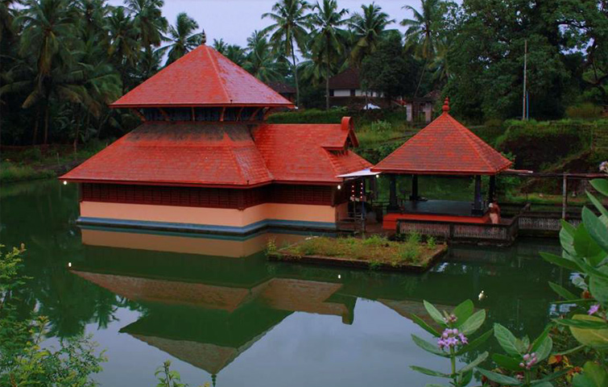

Incredible India
Most Famous Ancient Ganapati Temples in India
Some people call him ‘Ganesha,’some ‘Ekadanta,’ and some ‘Vinayaka,’ the most beloved god of the Hindus ‘Lord Ganapati’ is the one who brings happiness and prosperity even for the most depressed soul. The elephant deity is the son of Shiva and Parvati and is considered to be the lord of good fortune, success, education, knowledge, wisdom, and wealth, and destroyer of evils. He is superior of all the Hindu gods and is always prayed first, be it any special occasion like marriage, birth of a child, or beginning of new life. There are many famous ancient temples in India, dedicated to Lord Ganesha that worshipers can’t resist but visit. Here is a list of 12 most ancient beautiful Ganapati temples in India that deserves to be seen on your spiritual tours in India.
Shree Siddhivinayak Temple, Mumbai

This majestic temple is counted among India’s most popular Ganapati temples, visited by a large number of tourists every day, especially during Ganesh Chaturthi. It was built by contractor Laxman Vithu Patil for a childless woman in a belief that it would advantage other women with no child. A lot of celebrities and famous personalities visit this ancient temple to offer their prayers to the elephant deity. Located in Mumbai, Maharashtra, the Siddhivinayak Ganapati Mandir looks very beautiful during night, when the temple complex is decorated with lights and flowers. Recently, the temple also won the ‘Best Trust Award’ for its participation in human welfare and social activities.
Shrimant Dagdusheth Halwai Ganpati Temple, Pune

Shrimant Dagdusheth Halwai Ganpati Temple is the second most popular temple in Maharashtra after Shree Sidhivinayak Temple, dedicated to Lord Ganapati. It is located in Pune and is visited by a large number of tourists from all over the country. The temple trust is one of the richest in India and is famous for its intrinsic designs and its Golden idol, which is believed to the most beautiful part of the temple. This majestic temple was built by Shrimant Dagusheth Halwai, who was a sweet-maker by profession, when he lost his son to plague. Managed by the Halwai Ganapati Trust, the temple looks its best during Ganeshotsava, when the whole structure is decorated with lights and flowers.
Kanipakam Vinayaka Temple, Chittoor

This beautiful temple is located approximately 75 kms away from Tirupati in Chittoor district of Andhra Pradesh. It is among the best ancient Ganapati temples in India, known for its historic structure and intrinsic designs. Worshippers from different parts of the country visit Kanipakam Vinayaka Temple to offer prayers to Lord Ganesha, whose idol has three colors on its forehead, white, yellow, and red. The temple was built by the Chola King Kulothings Chola I in the 11th century to resolve the dispute between the people and end the evil. A lot of people who visit this magical temple of Lord Ganapapti, takes a dip in the holy water of the temple to clear their sin and resolve problems. Brahmotsavam is the main festival of this temple, celebrated every year during Vinayaka Chaturthi.
Manakula Vinayagar Temple, Pondicherry
Manakula Vinayagar Temple was constructed during the French territory of Pondicherry that dates back to 1666 years ago. This majestic building is named after a pond (Kulam) that used to be located inside the temple with sands blown in from the seashores. It is believed that the Ganesha idol here was being thrown into the sea several times, but it reappears in the same place every day, making the place famous among worshippers. Till date, the idol is positioned at the same spot in the center of the French Colony. Brahmotsava, and Ganesh Chaturthi are two most important festivals of the temple, celebrated with great fervour and zeal by the people of Pondicherry. The temple has an elephant, whom the visitors offer a coin to get a pat on their head through his trunk as a blessing.
Madhur Mahaganapathi Temple, Kerala
This 10th century old temple is located on the banks of the Madhuvahini River in Kasaragod, Kerala. Known for its architectural beauty and historic structure, this beautiful Madhur Mahaganapathi Temple was built by the Mypadi Rajas of Kumbla. It is believed that the temple has an idol of Lord Ganesha, which is not made of stone or soil but of a different material. The presiding deity of this temple is Lord Shiva, however, the uniqueness of the idol of Lord Ganesha, makes this temple popular among tourists. Some people also believe that once Tipu Sultan visited the temple with an intend to destroy it, but something changed his mind and he left it the way it is now. The temple has a pond, which is believed to possess medicinal and curative properties that can heal anyone with skin illness or other rare disease. Moodappa Seva is a special festival celebrated here, in which, the statue of Lord Ganapati is covered with a mixture of sweet rice and ghee called Moodappam.
Ranthambore Ganesh Temple, Rajasthan
Surely, Ranthambore National Park is one of the best tourist places in India, visited by nature lovers, and wildlife enthusiasts. But, the Ranthambore National Park is widely visited by pilgrims and religious travelers to seek the blessings of three-eyed god called ‘Trinetra Ganesh,’ whose temple is located atop Ranthambore’s historic 1000-year-old fort. This beautiful temple is so popular that people from different corners of the country send mails and wedding cards to the god to seek his blessings & love. It is believed that the temple received the wedding invite of Lord Krishna and Rukmani’s marriage some thousands years back and since then, the people send their wedding invitations to the god. Ranthambore Ganesh Temple is around 6500 years old, visited by approximately one million people over 3-4 days during Ganesh Mela, held every year during Ganesh Chaturthi.
Moti Dungri Ganesh Temple, Jaipur
Moti Dungri Ganesh Temple in Jaipur was constructed by Seth Jai Ram Paliwal in the 18th century to seek blessings of Lord Ganesha before every special occasion. Positioned on a small hill, this religious spot is one of the most famous tourist attractions in Jaipur, frequented by worshippers from different corners of the country every day. An exotic palace named ‘Moti Dungri Palace’, which belonged to Rajmata Gaytri Devi is also located in the same vicinity as that of the temple and a lot of visitors visit it too. The intricate stone carving and its exquisite lattice work in the temple, makes it a must visit destination for tourists, especially history lovers and art lovers. Ganesh Chaturthi is the main festival celebrated in this temple.
Ganesh Tok Temple, Gangtok
We know what you must be thinking? In a land of Buddhists, a shrine of Lord Ganesh is hard to find, but very less people know that the Gangtok city houses a beautiful temple, dedicated to the elephant god on top of a hill near the Gangtok TV Tower. Ganesh Tok Temple is among the top places to visit in Gangtok, which is a famous hill station in Sikkim. A lot of worshippers visit this temple to offer their prayers to the Lord Ganesha, who is considered the god of good fortune. The surroundings of the temple too makes it a preferred choice of tourists for pilgrimage tour in India. The scenic views of lush green valleys and Mount Khangchendzonga is very much evident from this temple.
Ganpatipule Temple, Ratnagiri, Maharashtra
One thing which makes this temple unique is the fact that the Ganesh idol in Ganpatipule Temple, Ratnagiri faces west instead of east. Also, the locals believe that the idol of Lord Ganesha is not placed by anyone, but has been self-evolved. Legend has it that once a cow of a local cowman, stopped giving milk and had only started it again at a particular spot on the reef, where later a stone emerged with an image of Lord Ganesha. Since that day the place was declared a holy spot and people started praying to the stone naming the spot Ganapatipule Temple. The temple is constructed in a way that sunlight falls directly on the idol of Ganesha in the months of February and November.
Rockfort Ucchi Pillayar Koil Temple, Tamil Nadu
This majestic temple, perched on top of a hill in the Tiruchirappalli town of Tamil Nadu, holds a significant importance amid Hindus. There is a long story behind the origin of the Rockfort Ucchi Pillayar Koil Temple; It says that after killing Ravana, Lord Ram gifted an idol of Lord Ranganatha to Vibhishana, instructing him that the idol take root wherever it is placed. Since, Vibhishana was the brother of Ravana, many gods didn’t want him to take the idol to Lanka, so they entreated Lord Ganesha to stop Vibhishana from returning to Lanka. On his way back to Lanka, Vibhishana came across with beautiful Kaveri River and decided to take a dip in it. Same time, Lord Ganesha appeared in front of Vibhishana as a young cowherd and offered to hold the idol while he takes a bath. The moment Vibhishana handed him the idol, Lord Ganesha put it on the sandy banks of the river. This made Vibhishana very angry and he ran after Lord Ganesha and finally caught him up and hit him on the forehead. That’s when Lord Ganesh came in his real form and Vibhishana had to apologized to him. The very place became the Ucchi Pillayar Temple and the place where the idol of Lord Ranganatha was placed became the Sri Ranganatha Swamy Temple.
Karpaga Vinayagar Temple, Pillaiyarpatti, Tamil Nadu
This beautiful temple is believed to be around 1600 years old, which is one of the oldest in Tamil Nadu. It is carved out of a stone in a cave with images of several other gods and deities. The six-feet idol of Lord Ganesha is very beautiful and visitors come here, especially to see this stone-carved idol, adorned with jewelries and other ornaments. The Karpaga Vinayagar Temple built by the Pandya Kings, is a very popular spot in Tamil Nadu. It is particularly known for its unique architecture and intricate designing. Ganesha Chaturthi is the main festival celebrated in the temple with a great fervour and happiness.
Sasivekalu & Kadale Kalu Ganesha Temple, Hampi, Karnataka
Sasivekalu & Kadale Kalu Ganesha Temple is one of the prime attractions in Hampi, which once used to be the glorious capital of the Vijaynagar Empire. This temple has two unique idols of Lord Ganesha that dates back to 1440 AD and several images of other deities that too are very old. The statues of Lord Ganesha here are believed to be the largest Ganesha statues in Karnataka. Some people say that once the troops of the Deccan Sultanate broke the stomach of the statue, believing it contained jewels. This led to a crack in the idol of Lord Ganesha, which looked like a gram seed. Since then the name of the idol was kept ‘Kadale Kalu Ganesh’.